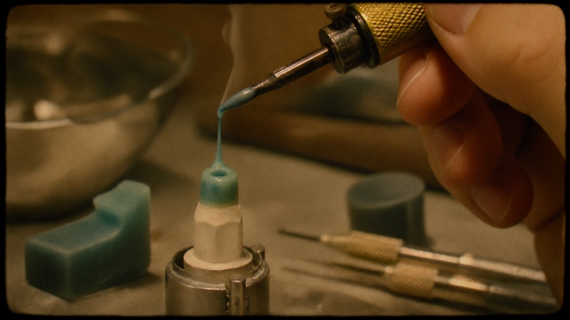
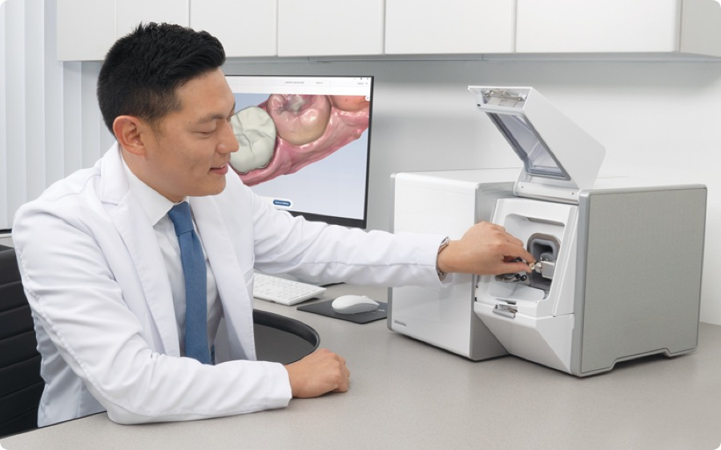
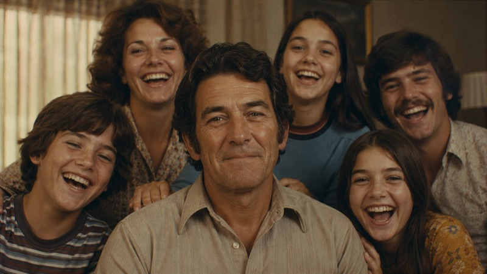

A side of dentistry the world has almost never seen.
There are documentaries about nearly everything — and almost none about dentistry. Yet it’s living through one of the most remarkable chapters in its history: a hands-on craft, largely unchanged for generations, has gone digital — and begun handing its work to AI.
Told across several generations of dentists and dental technicians — from the ones who carved crowns by hand to the ones teaching AI to design them — it’s really the story of how a whole industry grew up. Glidewell is making the film, but it isn’t a film about Glidewell: the company is simply a lens wide enough to hold the depth, and the many facets, of the craft of giving smiles back.

“The best dentistry in the world doesn’t help the person who can’t afford to walk in.”
The change was never only technical — it was about reach. Making good dentistry faster, cheaper, and possible for people who’d been priced or frightened out of the chair. The film follows that long, unfinished push, and what it has meant — for the people who do this work, and the people who needed it.
In the end, it’s a film for everyone with teeth — and, especially, for everyone without.
Told by everyone who lived it — in their own words.
First-hand voices from across the field:
- The dentists who carried their practices from analog to digital
- The master technicians who shaped crowns by hand
- The independent experts who tested the new materials
- The educators and the rising generation of doctors
- And the patients on the other side of the chair

If you’ve lived this, you’re part of the record.
Whether you practiced through the shift or you’re shaping what comes next, your account belongs in it. We want the truth of your work — what changed, what it cost, what it made possible — in your own words. No script, no sales pitch.
- A relaxed, on-camera conversation about your path and your work — nothing to memorize, no script. We guide it.
- Around it, we quietly film a little of your everyday practice for texture.
- We come to you, work around your schedule, and stay out of the way of your patients.
